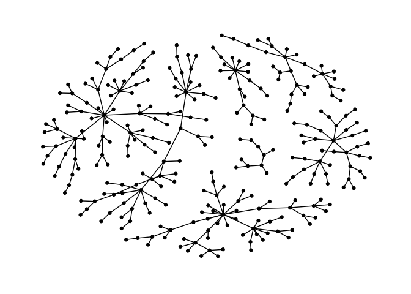
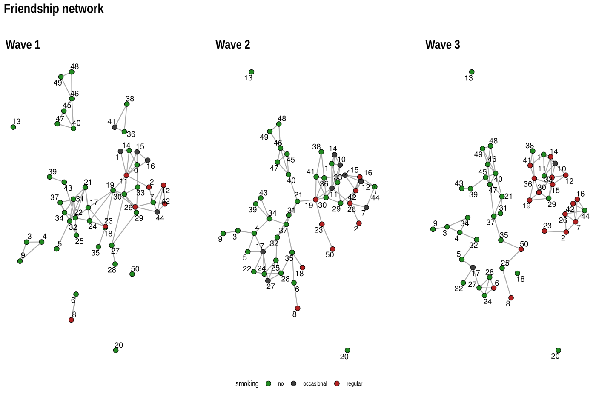
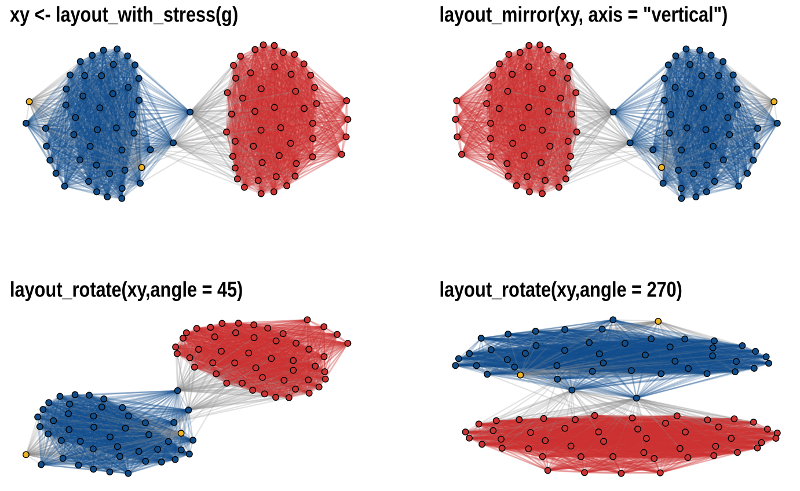

This package implements some graph layout algorithms that are not available in igraph.
A detailed introductory tutorial for graphlayouts and ggraph can be found here.
The package implements the following algorithms:
- Stress majorization (Paper)
- Quadrilateral backbone layout (Paper)
- flexible radial layouts (Paper)
- sparse stress (Paper)
- pivot MDS (Paper)
- dynamic layout for longitudinal data (Paper)
- spectral layouts (adjacency/Laplacian)
- a simple multilevel layout
- a layout algorithm using UMAP
- group based centrality and focus layouts which keeps groups of nodes close in the same range on the concentric circle
Install
# dev version
remotes::install_github("schochastics/graphlayouts")
# CRAN
install.packages("graphlayouts")Stress Majorization: Connected Network
This example is a bit of a special case since it exploits some weird issues in igraph.
library(igraph)
library(ggraph)
library(graphlayouts)
set.seed(666)
pa <- sample_pa(1000, 1, 1, directed = F)
ggraph(pa, layout = "nicely") +
geom_edge_link0(width = 0.2, colour = "grey") +
geom_node_point(col = "black", size = 0.3) +
theme_graph()
ggraph(pa, layout = "stress") +
geom_edge_link0(width = 0.2, colour = "grey") +
geom_node_point(col = "black", size = 0.3) +
theme_graph()
Stress Majorization: Unconnected Network
Stress majorization also works for networks with several components. It relies on a bin packing algorithm to efficiently put the components in a rectangle, rather than a circle.
set.seed(666)
g <- disjoint_union(
sample_pa(10, directed = FALSE),
sample_pa(20, directed = FALSE),
sample_pa(30, directed = FALSE),
sample_pa(40, directed = FALSE),
sample_pa(50, directed = FALSE),
sample_pa(60, directed = FALSE),
sample_pa(80, directed = FALSE)
)
ggraph(g, layout = "nicely") +
geom_edge_link0() +
geom_node_point() +
theme_graph()
ggraph(g, layout = "stress", bbox = 40) +
geom_edge_link0() +
geom_node_point() +
theme_graph()
Backbone Layout
Backbone layouts are helpful for drawing hairballs.
set.seed(665)
# create network with a group structure
g <- sample_islands(9, 40, 0.4, 15)
g <- simplify(g)
V(g)$grp <- as.character(rep(1:9, each = 40))
ggraph(g, layout = "stress") +
geom_edge_link0(colour = rgb(0, 0, 0, 0.5), width = 0.1) +
geom_node_point(aes(col = grp)) +
scale_color_brewer(palette = "Set1") +
theme_graph() +
theme(legend.position = "none")The backbone layout helps to uncover potential group structures based on edge embeddedness and puts more emphasis on this structure in the layout.
bb <- layout_as_backbone(g, keep = 0.4)
E(g)$col <- FALSE
E(g)$col[bb$backbone] <- TRUE
ggraph(g, layout = "manual", x = bb$xy[, 1], y = bb$xy[, 2]) +
geom_edge_link0(aes(col = col), width = 0.1) +
geom_node_point(aes(col = grp)) +
scale_color_brewer(palette = "Set1") +
scale_edge_color_manual(values = c(rgb(0, 0, 0, 0.3), rgb(0, 0, 0, 1))) +
theme_graph() +
theme(legend.position = "none")Radial Layout with Focal Node
The function layout_with_focus() creates a radial layout around a focal node. All nodes with the same distance from the focal node are on the same circle.
library(igraphdata)
library(patchwork)
data("karate")
p1 <- ggraph(karate, layout = "focus", focus = 1) +
draw_circle(use = "focus", max.circle = 3) +
geom_edge_link0(edge_color = "black", edge_width = 0.3) +
geom_node_point(aes(fill = as.factor(Faction)), size = 2, shape = 21) +
scale_fill_manual(values = c("#8B2323", "#EEAD0E")) +
theme_graph() +
theme(legend.position = "none") +
coord_fixed() +
labs(title = "Focus on Mr. Hi")
p2 <- ggraph(karate, layout = "focus", focus = 34) +
draw_circle(use = "focus", max.circle = 4) +
geom_edge_link0(edge_color = "black", edge_width = 0.3) +
geom_node_point(aes(fill = as.factor(Faction)), size = 2, shape = 21) +
scale_fill_manual(values = c("#8B2323", "#EEAD0E")) +
theme_graph() +
theme(legend.position = "none") +
coord_fixed() +
labs(title = "Focus on John A.")
p1 + p2
Radial Centrality Layout
The function layout_with_centrality creates a radial layout around the node with the highest centrality value. The further outside a node is, the more peripheral it is.
library(igraphdata)
library(patchwork)
data("karate")
bc <- betweenness(karate)
p1 <- ggraph(karate, layout = "centrality", centrality = bc, tseq = seq(0, 1, 0.15)) +
draw_circle(use = "cent") +
annotate_circle(bc, format = "", pos = "bottom") +
geom_edge_link0(edge_color = "black", edge_width = 0.3) +
geom_node_point(aes(fill = as.factor(Faction)), size = 2, shape = 21) +
scale_fill_manual(values = c("#8B2323", "#EEAD0E")) +
theme_graph() +
theme(legend.position = "none") +
coord_fixed() +
labs(title = "betweenness centrality")
cc <- closeness(karate)
p2 <- ggraph(karate, layout = "centrality", centrality = cc, tseq = seq(0, 1, 0.2)) +
draw_circle(use = "cent") +
annotate_circle(cc, format = "scientific", pos = "bottom") +
geom_edge_link0(edge_color = "black", edge_width = 0.3) +
geom_node_point(aes(fill = as.factor(Faction)), size = 2, shape = 21) +
scale_fill_manual(values = c("#8B2323", "#EEAD0E")) +
theme_graph() +
theme(legend.position = "none") +
coord_fixed() +
labs(title = "closeness centrality")
p1 + p2
Large graphs
graphlayouts implements two algorithms for visualizing large networks (<100k nodes). layout_with_pmds() is similar to layout_with_mds() but performs the multidimensional scaling only with a small number of pivot nodes. Usually, 50-100 are enough to obtain similar results to the full MDS.
layout_with_sparse_stress() performs stress majorization only with a small number of pivots (~50-100). The runtime performance is inferior to pivotMDS but the quality is far superior.
A comparison of runtimes and layout quality can be found in the wiki
tl;dr: both layout algorithms appear to be faster than the fastest igraph algorithm layout_with_drl().
Below are two examples of layouts generated for large graphs using layout_with_sparse_stress()
A retweet network with 18k nodes and 61k edges
A network of football players with 165K nodes and 6M edges.
dynamic layouts
layout_as_dynamic() allows you to visualize snapshots of longitudinal network data. Nodes are anchored with a reference layout and only moved slightly in each wave depending on deleted/added edges. In this way, it is easy to track down specific nodes throughout time. Use patchwork to put the individual plots next to each other.
# remotes::install_github("schochastics/networkdata")
library(networkdata)
# longitudinal dataset of friendships in a school class
data("s50")
xy <- layout_as_dynamic(s50, alpha = 0.2)
pList <- vector("list", length(s50))
for (i in seq_along(s50)) {
pList[[i]] <- ggraph(s50[[i]], layout = "manual", x = xy[[i]][, 1], y = xy[[i]][, 2]) +
geom_edge_link0(edge_width = 0.6, edge_colour = "grey66") +
geom_node_point(shape = 21, aes(fill = as.factor(smoke)), size = 3) +
geom_node_text(aes(label = 1:50), repel = T) +
scale_fill_manual(
values = c("forestgreen", "grey25", "firebrick"),
labels = c("no", "occasional", "regular"),
name = "smoking",
guide = ifelse(i != 2, "none", "legend")
) +
theme_graph() +
theme(legend.position = "bottom") +
labs(title = paste0("Wave ", i))
}
wrap_plots(pList)
Layout manipulation
The functions layout_mirror() and layout_rotate() can be used to manipulate an existing layout

How to reach out?
Where do I report bugs?
Simply open an issue on GitHub.
How do I contribute to the package?
If you have an idea (but no code yet), open an issue on GitHub. If you want to contribute with a specific feature and have the code ready, fork the repository, add your code, and create a pull request.
Do you need support?
The easiest way is to open an issue - this way, your question is also visible to others who may face similar problems.
Code of Conduct
Please note that the graphlayouts project is released with a Contributor Code of Conduct. By contributing to this project, you agree to abide by its terms.